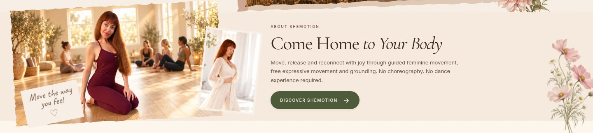
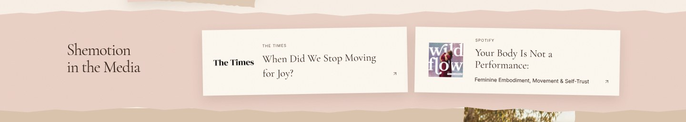
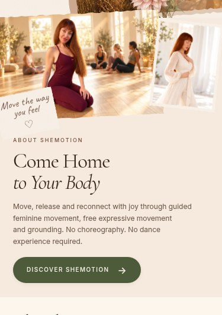
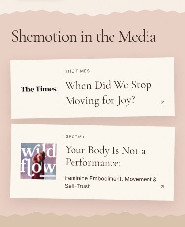

Uncommitted review preview. Supplied studio landscape and cream-dress portrait, with the verified Spotify episode alongside The Times. Production and Git remain unchanged.




The podcast is staged for this preview; its normal production media record will be published only after approval. No commit or production deployment has been made.